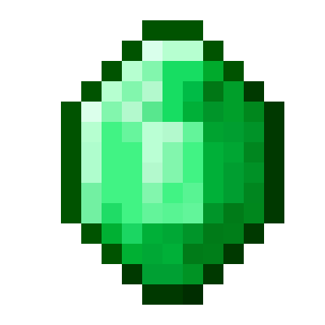

| Totally Legit Gem |
|  |
| Kept on death Adds +1 tier to a mystic enchant Once per item! Hold and right-click to use! |
Totally Legit Gems, commonly referred to as "gems", are items in The Pit that can be used on mystic items to upgrade them.
Totally Legit Gems can be obtained as a reward from the Uberstreak megastreak.
When held and right-clicked, a GUI with every eligible mystic in the player's inventory will be opened. The player can then select a mystic and a non-RARE! enchant on the mystic that is at a tier lower than III to increase the enchant's tier by one token.
Mystics must meet the following conditions to be considered eligible:
The gem will be consumed on use.
Using a gem on a mystic item causes a green diamond icon (♦) to appear next to the lives count. If an item has had a gem applied, it will cost twice as many Chunks of Vile to repair using the Magnum Opus megastreak.
Trivia
Shortly after release, a bug was discovered allowing players to apply multiple gems to the same item. This allowed for the creation of some mystics that are not normally possible to obtain in the Mystic Well. The bug was patched at a later date.